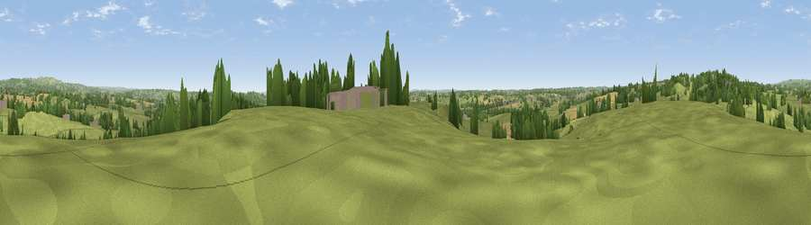

Viewpoint near Hollington
#27601 in England · top 39% of its area beats it · near HollingtonThe view, rendered

A 360° render of this exact spot computed from the terrain model, tree cover and land cover — summer colours, afternoon light, calibrated against photographs of famous viewpoints. Real trees, hedges and buildings will differ in detail.
The panorama
Grey silhouette: terrain skyline in each direction (720 bearings, Earth curvature and refraction included). Dashed green: skyline with trees (+15 m) and buildings (+8 m) as obstacles. Blue strip: how far the ground is visible on each bearing.
Where the view opens
Wedge length = distance to the farthest visible ground on that bearing (vegetation-aware). Rings at 10, 25 and 50 km.
What fills the view
74% grassland · 14% woodland · 11% cropland · 2% built-up
Angular shares of the visible panorama (visual magnitude), not map area. Landscape diversity 0.35 (0–1 Shannon).
Key numbers
More beautiful places nearby
The staircase of upgrades: each row has a higher view potential than everything closer. Driving times are estimates from straight-line distance, calibrated against real road routing — check an actual route before setting out.
| Place | Direction | Drive | Score |
|---|---|---|---|
| Viewpoint near Hollington | NW · 1 km | ~4 min | 50.5 |
| Viewpoint near Hollington | WNW · 2 km | ~5 min | 57.2 |
| Viewpoint near Cheadle | NW · 6 km | ~12 min | 61.0 |
| Viewpoint near Oakamoor | N · 7 km | ~14 min | 62.9 |
| Viewpoint near Wootton | NNE · 9 km | ~18 min | 74.4 |
| Viewpoint near Wootton | NNE · 9 km | ~18 min | 74.8 |
| Tissington Hill | NNE · 17 km | ~30 min | 75.5 |
| Viewpoint near Mow Cop | NW · 28 km | ~45 min | 80.2 |
52.93913, -1.90287 · source: screening · position refined by local search. Computed location — check access rights before visiting.